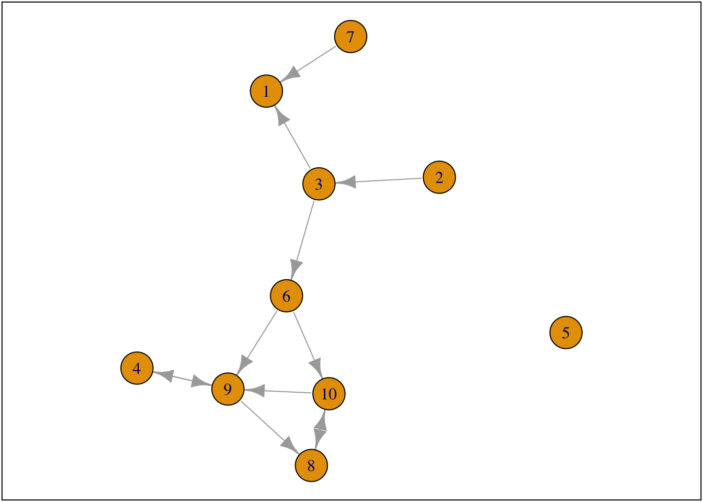
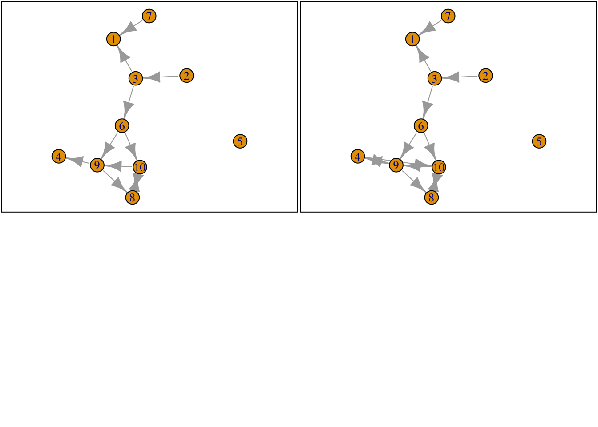
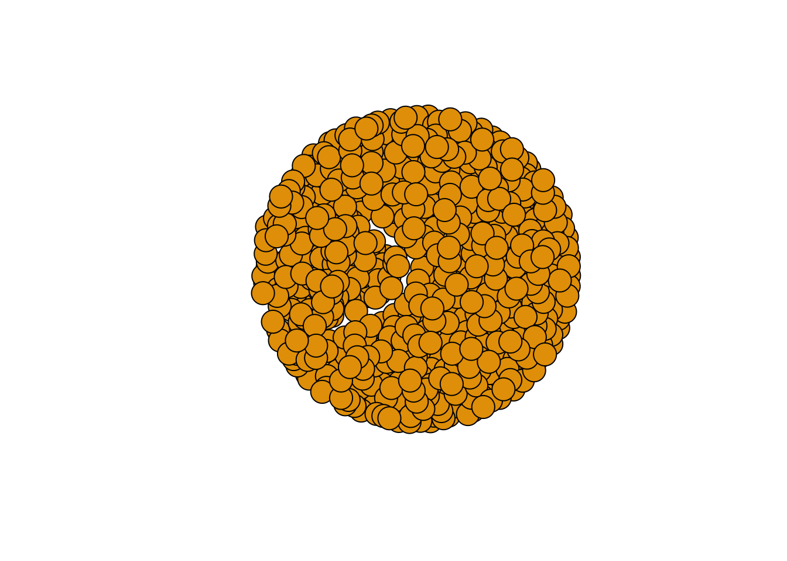
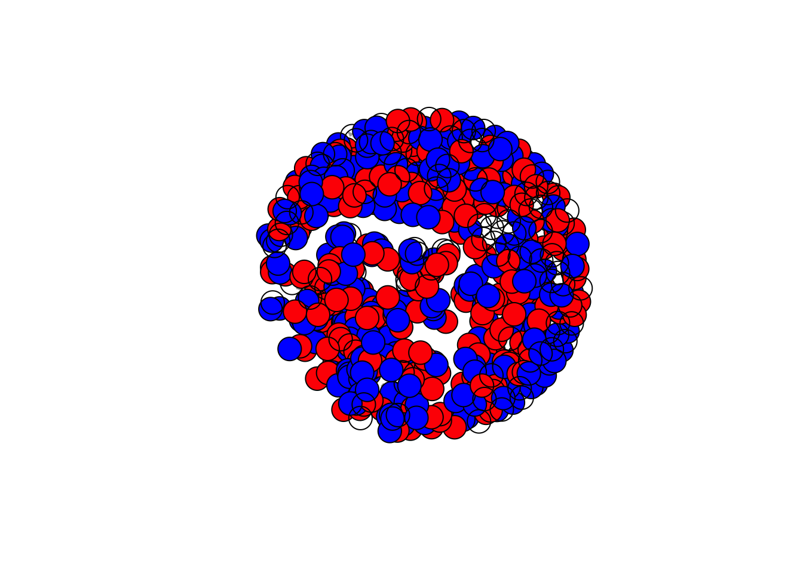
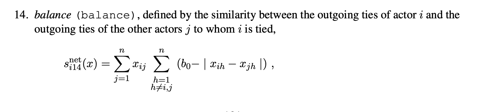
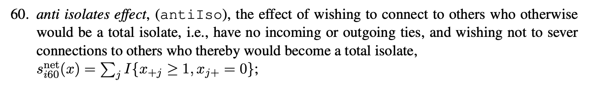

Week 1
Bram Koeweiden
Last compiled on October, 2025
fpackage.check <- function(packages) {
lapply(packages, FUN = function(x) {
if (!require(x, character.only = TRUE)) {
install.packages(x, dependencies = TRUE)
library(x, character.only = TRUE)
}
})
}
fsave <- function(x, file = NULL, location = "./data/processed/") {
ifelse(!dir.exists("data"), dir.create("data"), FALSE)
ifelse(!dir.exists("data/processed"), dir.create("data/processed"), FALSE)
if (is.null(file))
file = deparse(substitute(x))
datename <- substr(gsub("[:-]", "", Sys.time()), 1, 8)
totalname <- paste(location, datename, file, ".rda", sep = "")
save(x, file = totalname) #need to fix if file is reloaded as input name, not as x.
}
fload <- function(filename) {
load(filename)
get(ls()[ls() != "filename"])
}
fshowdf <- function(x, ...) {
knitr::kable(x, digits = 2, "html", ...) %>%
kableExtra::kable_styling(bootstrap_options = c("striped", "hover")) %>%
kableExtra::scroll_box(width = "100%", height = "300px")
}
colorize <- function(x, color) {
sprintf("<span style='color: %s;'>%s</span>", color, x)
}
packages = c("RSiena", "devtools", "igraph")
fpackage.check(packages)#> [[1]]
#> NULL
#>
#> [[2]]
#> NULL
#>
#> [[3]]
#> NULL# devtools::install_github('JochemTolsma/RsienaTwoStep', build_vignettes=TRUE)
packages = c("RsienaTwoStep")
fpackage.check(packages)#> [[1]]
#> NULLts_net1#> [,1] [,2] [,3] [,4] [,5] [,6] [,7] [,8] [,9] [,10]
#> [1,] 0 0 0 0 0 0 0 0 0 0
#> [2,] 0 0 1 0 0 0 0 0 0 0
#> [3,] 1 0 0 0 0 1 0 0 0 0
#> [4,] 0 0 0 0 0 0 0 0 1 0
#> [5,] 0 0 0 0 0 0 0 0 0 0
#> [6,] 0 0 0 0 0 0 0 0 1 1
#> [7,] 1 0 0 0 0 0 0 0 0 0
#> [8,] 0 0 0 0 0 0 0 0 0 1
#> [9,] 0 0 0 1 0 0 0 1 0 0
#> [10,] 0 0 0 0 0 0 0 1 1 0net1g <- graph_from_adjacency_matrix(ts_net1, mode = "directed")
coords <- layout_(net1g, nicely()) #let us keep the layout
par(mar = c(0.1, 0.1, 0.1, 0.1))
{
plot.igraph(net1g, layout = coords)
graphics::box()
}
set.seed(24553253)
ego <- ts_select(net = ts_net1)
ego#> [1] 4options <- ts_alternatives_ministep(net = ts_net1, ego = ego)
options#> [[1]]
#> [,1] [,2] [,3] [,4] [,5] [,6] [,7] [,8] [,9] [,10]
#> [1,] 0 0 0 0 0 0 0 0 0 0
#> [2,] 0 0 1 0 0 0 0 0 0 0
#> [3,] 1 0 0 0 0 1 0 0 0 0
#> [4,] 1 0 0 0 0 0 0 0 1 0
#> [5,] 0 0 0 0 0 0 0 0 0 0
#> [6,] 0 0 0 0 0 0 0 0 1 1
#> [7,] 1 0 0 0 0 0 0 0 0 0
#> [8,] 0 0 0 0 0 0 0 0 0 1
#> [9,] 0 0 0 1 0 0 0 1 0 0
#> [10,] 0 0 0 0 0 0 0 1 1 0
#>
#> [[2]]
#> [,1] [,2] [,3] [,4] [,5] [,6] [,7] [,8] [,9] [,10]
#> [1,] 0 0 0 0 0 0 0 0 0 0
#> [2,] 0 0 1 0 0 0 0 0 0 0
#> [3,] 1 0 0 0 0 1 0 0 0 0
#> [4,] 0 1 0 0 0 0 0 0 1 0
#> [5,] 0 0 0 0 0 0 0 0 0 0
#> [6,] 0 0 0 0 0 0 0 0 1 1
#> [7,] 1 0 0 0 0 0 0 0 0 0
#> [8,] 0 0 0 0 0 0 0 0 0 1
#> [9,] 0 0 0 1 0 0 0 1 0 0
#> [10,] 0 0 0 0 0 0 0 1 1 0
#>
#> [[3]]
#> [,1] [,2] [,3] [,4] [,5] [,6] [,7] [,8] [,9] [,10]
#> [1,] 0 0 0 0 0 0 0 0 0 0
#> [2,] 0 0 1 0 0 0 0 0 0 0
#> [3,] 1 0 0 0 0 1 0 0 0 0
#> [4,] 0 0 1 0 0 0 0 0 1 0
#> [5,] 0 0 0 0 0 0 0 0 0 0
#> [6,] 0 0 0 0 0 0 0 0 1 1
#> [7,] 1 0 0 0 0 0 0 0 0 0
#> [8,] 0 0 0 0 0 0 0 0 0 1
#> [9,] 0 0 0 1 0 0 0 1 0 0
#> [10,] 0 0 0 0 0 0 0 1 1 0
#>
#> [[4]]
#> [,1] [,2] [,3] [,4] [,5] [,6] [,7] [,8] [,9] [,10]
#> [1,] 0 0 0 0 0 0 0 0 0 0
#> [2,] 0 0 1 0 0 0 0 0 0 0
#> [3,] 1 0 0 0 0 1 0 0 0 0
#> [4,] 0 0 0 0 0 0 0 0 1 0
#> [5,] 0 0 0 0 0 0 0 0 0 0
#> [6,] 0 0 0 0 0 0 0 0 1 1
#> [7,] 1 0 0 0 0 0 0 0 0 0
#> [8,] 0 0 0 0 0 0 0 0 0 1
#> [9,] 0 0 0 1 0 0 0 1 0 0
#> [10,] 0 0 0 0 0 0 0 1 1 0
#>
#> [[5]]
#> [,1] [,2] [,3] [,4] [,5] [,6] [,7] [,8] [,9] [,10]
#> [1,] 0 0 0 0 0 0 0 0 0 0
#> [2,] 0 0 1 0 0 0 0 0 0 0
#> [3,] 1 0 0 0 0 1 0 0 0 0
#> [4,] 0 0 0 0 1 0 0 0 1 0
#> [5,] 0 0 0 0 0 0 0 0 0 0
#> [6,] 0 0 0 0 0 0 0 0 1 1
#> [7,] 1 0 0 0 0 0 0 0 0 0
#> [8,] 0 0 0 0 0 0 0 0 0 1
#> [9,] 0 0 0 1 0 0 0 1 0 0
#> [10,] 0 0 0 0 0 0 0 1 1 0
#>
#> [[6]]
#> [,1] [,2] [,3] [,4] [,5] [,6] [,7] [,8] [,9] [,10]
#> [1,] 0 0 0 0 0 0 0 0 0 0
#> [2,] 0 0 1 0 0 0 0 0 0 0
#> [3,] 1 0 0 0 0 1 0 0 0 0
#> [4,] 0 0 0 0 0 1 0 0 1 0
#> [5,] 0 0 0 0 0 0 0 0 0 0
#> [6,] 0 0 0 0 0 0 0 0 1 1
#> [7,] 1 0 0 0 0 0 0 0 0 0
#> [8,] 0 0 0 0 0 0 0 0 0 1
#> [9,] 0 0 0 1 0 0 0 1 0 0
#> [10,] 0 0 0 0 0 0 0 1 1 0
#>
#> [[7]]
#> [,1] [,2] [,3] [,4] [,5] [,6] [,7] [,8] [,9] [,10]
#> [1,] 0 0 0 0 0 0 0 0 0 0
#> [2,] 0 0 1 0 0 0 0 0 0 0
#> [3,] 1 0 0 0 0 1 0 0 0 0
#> [4,] 0 0 0 0 0 0 1 0 1 0
#> [5,] 0 0 0 0 0 0 0 0 0 0
#> [6,] 0 0 0 0 0 0 0 0 1 1
#> [7,] 1 0 0 0 0 0 0 0 0 0
#> [8,] 0 0 0 0 0 0 0 0 0 1
#> [9,] 0 0 0 1 0 0 0 1 0 0
#> [10,] 0 0 0 0 0 0 0 1 1 0
#>
#> [[8]]
#> [,1] [,2] [,3] [,4] [,5] [,6] [,7] [,8] [,9] [,10]
#> [1,] 0 0 0 0 0 0 0 0 0 0
#> [2,] 0 0 1 0 0 0 0 0 0 0
#> [3,] 1 0 0 0 0 1 0 0 0 0
#> [4,] 0 0 0 0 0 0 0 1 1 0
#> [5,] 0 0 0 0 0 0 0 0 0 0
#> [6,] 0 0 0 0 0 0 0 0 1 1
#> [7,] 1 0 0 0 0 0 0 0 0 0
#> [8,] 0 0 0 0 0 0 0 0 0 1
#> [9,] 0 0 0 1 0 0 0 1 0 0
#> [10,] 0 0 0 0 0 0 0 1 1 0
#>
#> [[9]]
#> [,1] [,2] [,3] [,4] [,5] [,6] [,7] [,8] [,9] [,10]
#> [1,] 0 0 0 0 0 0 0 0 0 0
#> [2,] 0 0 1 0 0 0 0 0 0 0
#> [3,] 1 0 0 0 0 1 0 0 0 0
#> [4,] 0 0 0 0 0 0 0 0 0 0
#> [5,] 0 0 0 0 0 0 0 0 0 0
#> [6,] 0 0 0 0 0 0 0 0 1 1
#> [7,] 1 0 0 0 0 0 0 0 0 0
#> [8,] 0 0 0 0 0 0 0 0 0 1
#> [9,] 0 0 0 1 0 0 0 1 0 0
#> [10,] 0 0 0 0 0 0 0 1 1 0
#>
#> [[10]]
#> [,1] [,2] [,3] [,4] [,5] [,6] [,7] [,8] [,9] [,10]
#> [1,] 0 0 0 0 0 0 0 0 0 0
#> [2,] 0 0 1 0 0 0 0 0 0 0
#> [3,] 1 0 0 0 0 1 0 0 0 0
#> [4,] 0 0 0 0 0 0 0 0 1 1
#> [5,] 0 0 0 0 0 0 0 0 0 0
#> [6,] 0 0 0 0 0 0 0 0 1 1
#> [7,] 1 0 0 0 0 0 0 0 0 0
#> [8,] 0 0 0 0 0 0 0 0 0 1
#> [9,] 0 0 0 1 0 0 0 1 0 0
#> [10,] 0 0 0 0 0 0 0 1 1 0plots <- lapply(options, graph_from_adjacency_matrix, mode = "directed")
par(mar = c(0, 0, 0, 0) + 0.1)
par(mfrow = c(2, 2))
fplot <- function(x) {
plot.igraph(x, layout = coords, margin = 0)
graphics::box()
}
lapply(plots, fplot)

#> [[1]]
#> NULL
#>
#> [[2]]
#> NULL
#>
#> [[3]]
#> NULL
#>
#> [[4]]
#> NULL
#>
#> [[5]]
#> NULL
#>
#> [[6]]
#> NULL
#>
#> [[7]]
#> NULL
#>
#> [[8]]
#> NULL
#>
#> [[9]]
#> NULL
#>
#> [[10]]
#> NULL
# Step 1: define data
## dependent variable
s501#> V1 V2 V3 V4 V5 V6 V7 V8 V9 V10 V11 V12 V13 V14 V15 V16 V17 V18 V19 V20 V21 V22 V23 V24 V25 V26
#> 1 0 0 0 0 0 0 0 0 0 0 1 0 0 1 0 0 0 0 0 0 0 0 0 0 0 0
#> 2 0 0 0 0 0 0 1 0 0 0 1 0 0 0 0 0 0 0 0 0 0 0 0 0 0 0
#> 3 0 0 0 1 0 0 0 0 1 0 0 0 0 0 0 0 0 0 0 0 0 0 0 0 0 0
#> 4 0 0 1 0 0 0 0 0 1 0 0 0 0 0 0 0 0 0 0 0 0 0 0 0 0 0
#> 5 0 0 0 0 0 0 0 0 0 0 0 0 0 0 0 0 0 0 0 0 0 0 0 0 0 0
#> 6 0 0 0 0 0 0 0 1 0 0 0 0 0 0 0 0 0 0 0 0 0 0 0 0 0 0
#> 7 0 1 0 0 0 0 0 0 0 0 0 0 0 0 0 0 0 0 0 0 0 0 0 0 0 0
#> 8 0 0 0 0 0 1 0 0 0 0 0 0 0 0 0 0 0 0 0 0 0 0 0 0 0 0
#> 9 0 0 1 1 0 0 0 0 0 0 0 0 0 0 0 0 0 0 0 0 0 0 0 0 0 0
#> 10 0 0 0 0 0 0 0 0 0 0 1 0 0 0 1 0 0 0 0 0 0 0 0 0 0 0
#> 11 0 1 0 0 0 0 0 0 0 0 0 0 0 0 1 1 0 0 0 0 0 0 0 0 0 0
#> 12 0 0 0 0 0 0 1 0 0 0 0 0 0 0 0 0 0 0 0 0 0 0 0 0 0 0
#> 13 0 0 0 0 0 0 0 0 0 0 0 0 0 0 0 0 0 0 0 0 0 0 0 0 0 0
#> 14 1 0 0 0 0 0 0 0 0 1 1 0 0 0 0 0 0 0 0 0 0 0 0 0 0 0
#> 15 0 0 0 0 0 0 0 0 0 1 1 0 0 0 0 1 0 0 0 0 0 0 0 0 0 0
#> 16 0 0 0 0 0 0 0 0 0 0 1 0 0 0 1 0 0 0 0 0 0 0 0 0 0 0
#> 17 0 0 0 0 0 0 0 0 0 0 0 0 0 0 0 0 0 1 1 0 1 1 0 1 0 0
#> 18 0 0 0 0 0 0 0 0 0 0 0 0 0 0 0 0 0 0 1 0 0 0 0 0 0 0
#> 19 0 0 0 0 0 0 0 0 0 0 1 0 0 0 0 0 0 0 0 0 0 0 0 1 0 1
#> 20 0 0 0 0 0 0 0 0 0 0 0 0 0 0 0 0 0 0 0 0 0 0 0 0 0 0
#> 21 0 0 0 0 0 0 0 0 0 0 0 0 0 0 0 0 0 0 0 0 0 1 0 0 0 0
#> 22 0 0 0 0 0 0 0 0 0 0 0 0 0 0 0 0 1 0 0 0 1 0 0 0 0 0
#> 23 0 0 0 0 0 0 0 0 0 0 0 0 0 0 0 0 0 0 0 0 0 0 0 1 0 0
#> 24 0 0 0 0 0 0 0 0 0 0 0 0 0 0 0 0 1 0 1 0 1 1 1 0 0 0
#> 25 0 0 0 0 0 0 0 0 0 0 0 0 0 0 0 0 0 0 0 0 0 1 0 0 0 0
#> 26 0 0 0 0 0 0 1 0 0 0 0 0 0 0 0 0 0 0 0 0 0 0 0 0 0 0
#> 27 0 0 0 0 0 0 0 0 0 0 0 0 0 0 0 0 0 0 0 0 0 0 0 0 0 0
#> 28 0 0 0 0 0 0 0 0 0 0 0 0 0 0 0 0 0 0 0 0 0 0 0 0 0 0
#> 29 0 0 0 0 0 0 0 0 0 0 0 0 0 0 0 0 0 0 0 0 0 0 0 0 0 1
#> 30 0 0 0 0 0 0 0 0 0 0 1 0 0 0 0 0 0 0 0 0 0 0 0 0 0 1
#> 31 0 0 0 0 0 0 0 0 0 0 0 0 0 0 0 0 0 0 0 0 1 0 0 0 1 0
#> 32 0 0 0 0 1 0 0 0 0 0 0 0 0 0 0 0 0 0 0 0 1 0 0 0 0 0
#> 33 0 0 0 0 0 0 0 0 0 1 0 0 0 0 0 0 0 0 0 0 0 0 0 0 0 0
#> 34 0 0 0 0 0 0 0 0 0 0 0 0 0 0 0 0 0 0 0 0 0 0 0 0 0 0
#> 35 0 0 0 0 0 0 0 0 0 0 0 0 0 0 0 0 0 1 0 0 0 0 0 0 0 0
#> 36 0 0 0 0 0 0 0 0 0 0 0 0 0 0 0 0 0 0 0 0 0 0 0 0 0 0
#> 37 0 0 0 0 0 0 0 0 0 0 0 0 0 0 0 0 0 0 0 0 0 0 0 0 0 0
#> 38 0 0 0 0 0 0 0 0 0 0 0 0 0 0 0 0 0 0 0 0 0 0 0 0 0 0
#> 39 0 0 0 0 0 0 0 0 0 0 0 0 0 0 0 0 0 0 0 0 0 0 0 0 0 0
#> 40 0 0 0 0 0 0 0 0 0 0 0 0 0 0 0 0 0 0 0 0 0 0 0 0 0 0
#> 41 0 0 0 0 0 0 0 0 0 0 0 0 0 0 0 0 0 0 0 0 0 0 0 0 0 0
#> 42 0 0 0 0 0 0 1 0 0 0 0 0 0 0 0 0 0 0 0 0 0 0 0 0 0 0
#> 43 0 0 0 0 0 0 0 0 0 0 0 0 0 0 0 0 0 0 0 0 0 1 0 0 0 0
#> 44 0 0 0 0 0 0 1 0 0 0 0 0 0 0 0 0 0 0 0 0 0 0 0 0 0 0
#> 45 0 0 0 0 0 0 0 0 0 0 0 0 0 0 0 0 0 0 0 0 0 0 0 0 0 0
#> 46 0 0 0 0 0 0 0 0 0 0 0 0 0 0 0 0 0 0 0 0 0 0 0 0 0 0
#> 47 0 0 0 0 0 0 0 0 0 0 0 0 0 0 0 0 0 0 0 0 0 0 0 0 0 0
#> 48 0 0 0 0 0 0 0 0 0 0 0 0 0 0 0 0 0 0 0 0 0 0 0 0 0 0
#> 49 0 0 0 0 0 0 0 0 0 0 0 0 0 0 0 0 0 0 0 0 0 0 0 0 0 0
#> 50 0 0 0 0 0 0 0 0 0 0 0 0 0 0 0 0 0 0 0 0 0 0 0 0 0 0
#> V27 V28 V29 V30 V31 V32 V33 V34 V35 V36 V37 V38 V39 V40 V41 V42 V43 V44 V45 V46 V47 V48 V49 V50
#> 1 0 0 0 0 0 0 0 0 0 0 0 0 0 0 0 0 0 0 0 0 0 0 0 0
#> 2 0 0 0 0 0 0 0 0 0 0 0 0 0 0 0 0 0 0 0 0 0 0 0 0
#> 3 0 0 0 0 0 0 0 0 0 0 0 0 0 0 0 0 0 0 0 0 0 0 0 0
#> 4 0 0 0 0 0 0 0 0 0 0 0 0 0 0 0 0 0 0 0 0 0 0 0 0
#> 5 0 0 0 0 0 1 0 0 0 0 0 0 0 0 0 0 0 0 0 0 0 0 0 0
#> 6 0 0 0 0 0 0 0 0 0 0 0 0 0 0 0 0 0 0 0 0 0 0 0 0
#> 7 0 0 0 0 0 0 0 0 0 0 0 0 0 0 0 1 0 1 0 0 0 0 0 0
#> 8 0 0 0 0 0 0 0 0 0 0 0 0 0 0 0 0 0 0 0 0 0 0 0 0
#> 9 0 0 0 0 0 0 0 0 0 0 0 0 0 0 0 0 0 0 0 0 0 0 0 0
#> 10 0 0 0 0 0 0 1 0 0 0 0 0 0 0 0 0 0 0 0 0 0 0 0 0
#> 11 0 0 0 0 0 0 0 0 0 0 0 0 0 0 0 0 0 0 0 0 0 0 0 0
#> 12 0 0 0 0 0 0 0 0 0 0 0 0 0 0 0 1 0 1 0 0 0 0 0 0
#> 13 0 0 0 0 0 0 0 0 0 0 0 0 0 0 0 0 0 0 0 0 0 0 0 0
#> 14 0 0 0 0 0 0 0 0 0 0 0 0 0 0 0 0 0 0 0 0 0 0 0 0
#> 15 0 0 0 0 0 0 0 0 0 0 0 0 0 0 0 0 0 0 0 0 0 0 0 0
#> 16 0 0 0 0 0 0 0 0 0 0 0 0 0 0 0 0 0 0 0 0 0 0 0 0
#> 17 0 0 0 0 0 0 0 0 0 0 0 0 0 0 0 0 0 0 0 0 0 0 0 0
#> 18 0 0 0 0 0 0 0 0 1 0 0 0 0 0 0 0 0 0 0 0 0 0 0 0
#> 19 0 0 0 1 0 0 0 0 0 0 0 0 0 0 0 0 0 0 0 0 0 0 0 0
#> 20 0 0 0 0 0 0 0 0 0 0 0 0 0 0 0 0 0 0 0 0 0 0 0 0
#> 21 0 0 0 0 0 0 0 0 0 0 0 0 0 0 0 0 0 0 0 0 0 0 0 0
#> 22 0 0 0 0 1 0 0 1 0 0 0 0 0 0 0 0 0 0 0 0 0 0 0 0
#> 23 0 0 0 0 0 0 0 0 0 0 0 0 0 0 0 0 0 0 0 0 0 0 0 0
#> 24 0 0 0 0 0 0 0 0 0 0 0 0 0 0 0 0 0 0 0 0 0 0 0 0
#> 25 0 0 0 0 1 1 0 0 0 0 0 0 0 0 0 0 0 0 0 0 0 0 0 0
#> 26 0 0 1 0 0 0 0 0 0 0 0 0 0 0 0 0 0 1 0 0 0 0 0 0
#> 27 0 1 1 1 0 0 0 0 0 0 0 0 0 0 0 0 0 0 0 0 0 0 0 0
#> 28 1 0 0 0 0 0 0 0 0 0 0 0 0 0 0 0 0 0 0 0 0 0 0 0
#> 29 0 0 0 1 0 0 1 0 0 0 0 0 0 0 0 0 0 0 0 0 0 0 0 0
#> 30 0 0 1 0 0 0 1 0 0 0 0 0 0 0 0 0 0 0 0 0 0 0 0 0
#> 31 0 0 0 0 0 1 0 0 0 0 0 0 0 0 0 0 0 0 0 0 0 0 0 0
#> 32 0 0 0 0 1 0 0 0 0 0 1 0 0 0 0 0 0 0 0 0 0 0 0 0
#> 33 0 0 0 1 0 0 0 0 0 0 0 0 0 0 0 0 0 0 0 0 0 0 0 0
#> 34 0 0 0 0 1 0 0 0 0 0 1 0 0 0 0 0 0 0 0 0 0 0 0 0
#> 35 0 0 0 0 0 0 0 0 0 0 0 0 0 0 0 0 0 0 0 0 0 0 0 0
#> 36 0 0 0 0 0 0 0 0 0 0 0 1 0 0 1 0 0 0 0 0 0 0 0 0
#> 37 0 0 0 0 1 1 0 1 0 0 0 0 0 0 0 0 0 0 0 0 0 0 0 0
#> 38 0 0 0 0 0 0 0 0 0 1 0 0 0 0 1 0 0 0 0 0 0 0 0 0
#> 39 0 0 0 0 0 0 0 0 0 0 0 0 0 0 0 0 1 0 0 0 0 0 0 0
#> 40 0 0 0 0 0 0 0 0 0 0 0 0 0 0 0 0 0 0 1 1 1 0 0 0
#> 41 0 0 0 0 0 0 0 0 0 1 0 1 0 0 0 0 0 0 0 0 0 0 0 0
#> 42 0 0 0 0 0 0 0 0 0 0 0 0 0 0 0 0 0 1 0 0 0 0 0 0
#> 43 0 0 0 0 0 0 0 0 0 0 0 0 1 0 0 0 0 0 0 0 0 0 0 0
#> 44 0 0 0 0 0 0 0 0 0 0 0 0 0 0 0 1 0 0 0 0 0 0 0 0
#> 45 0 0 0 0 0 0 0 0 0 0 0 0 0 1 0 0 0 0 0 1 1 0 0 0
#> 46 0 0 0 0 0 0 0 0 0 0 0 0 0 1 0 0 0 0 1 0 0 0 1 0
#> 47 0 0 0 0 0 0 0 0 0 0 0 0 0 0 0 0 0 0 0 0 0 0 0 0
#> 48 0 0 0 0 0 0 0 0 0 0 0 0 0 0 0 0 0 0 0 1 0 0 1 0
#> 49 0 0 0 0 0 0 0 0 0 0 0 0 0 0 0 0 0 0 0 1 0 1 0 0
#> 50 0 0 0 0 0 0 0 0 0 0 0 0 0 0 0 0 0 0 0 0 0 0 0 0s502#> V1 V2 V3 V4 V5 V6 V7 V8 V9 V10 V11 V12 V13 V14 V15 V16 V17 V18 V19 V20 V21 V22 V23 V24 V25 V26
#> 1 0 0 0 0 0 0 0 0 0 1 0 0 0 1 0 0 0 0 0 0 0 0 0 0 0 0
#> 2 0 0 0 0 0 0 0 0 0 0 0 0 0 0 0 0 0 0 0 0 0 0 0 0 0 1
#> 3 0 0 0 1 0 0 0 0 1 0 0 0 0 0 0 0 0 0 0 0 0 0 0 0 0 0
#> 4 0 0 1 0 0 0 0 0 0 0 0 0 0 0 0 0 0 0 0 0 0 0 0 0 0 0
#> 5 0 0 0 1 0 0 0 0 0 0 0 0 0 0 0 0 1 0 0 0 0 0 0 0 0 0
#> 6 0 0 0 0 0 0 0 1 0 0 0 0 0 0 0 0 0 0 0 0 0 0 0 0 0 0
#> 7 0 0 0 0 0 0 0 0 0 0 0 0 0 0 0 0 0 0 0 0 0 0 0 0 0 0
#> 8 0 0 0 0 0 1 0 0 0 0 0 0 0 0 0 0 0 0 0 0 0 0 0 0 0 0
#> 9 0 0 1 0 0 0 0 0 0 0 0 0 0 0 0 0 0 0 0 0 0 0 0 0 0 0
#> 10 1 0 0 0 0 0 0 0 0 0 1 0 0 1 0 0 0 0 0 0 0 0 0 0 0 0
#> 11 1 0 0 0 0 0 0 0 0 1 0 0 0 0 0 0 0 0 1 0 0 0 0 0 0 1
#> 12 0 0 0 0 0 0 0 0 0 0 0 0 0 0 1 0 0 0 0 0 0 0 0 0 0 1
#> 13 0 0 0 0 0 0 0 0 0 0 0 0 0 0 0 0 0 0 0 0 0 0 0 0 0 0
#> 14 1 0 0 0 0 0 0 0 0 1 1 0 0 0 0 0 0 0 0 0 0 0 0 0 0 0
#> 15 0 0 0 0 0 0 0 0 0 0 0 0 0 0 0 0 0 0 0 0 0 0 0 0 0 0
#> 16 0 0 0 0 0 0 0 0 0 0 0 0 0 0 1 0 0 0 0 0 0 0 0 0 0 1
#> 17 0 0 0 1 1 0 0 0 0 0 0 0 0 0 0 0 0 0 0 0 0 1 0 1 0 0
#> 18 0 0 0 0 0 0 0 0 0 0 0 0 0 0 0 0 0 0 0 0 0 0 0 0 0 0
#> 19 0 0 0 0 0 0 0 0 0 0 0 0 0 0 0 0 0 0 0 0 0 0 0 0 0 0
#> 20 0 0 0 0 0 0 0 0 0 0 0 0 0 0 0 0 0 0 0 0 0 0 0 0 0 0
#> 21 0 0 0 0 0 0 0 0 0 0 0 0 0 0 0 0 0 0 1 0 0 0 0 0 0 0
#> 22 0 0 0 0 0 0 0 0 0 0 0 0 0 0 0 0 1 0 0 0 0 0 0 0 0 0
#> 23 0 0 0 0 0 0 0 0 0 0 0 0 0 0 0 0 0 0 1 0 0 0 0 0 0 0
#> 24 0 0 0 0 0 0 0 0 0 0 0 0 0 0 0 0 1 0 0 0 0 1 0 0 0 0
#> 25 0 0 0 0 0 0 0 0 0 0 0 0 0 0 0 0 0 0 0 0 0 0 0 1 0 0
#> 26 0 0 0 0 0 0 1 0 0 0 0 0 0 0 0 1 0 0 0 0 0 0 0 0 0 0
#> 27 0 0 0 0 0 0 0 0 0 0 0 0 0 0 0 0 1 0 0 0 0 0 0 0 0 0
#> 28 0 0 0 0 0 0 0 0 0 0 0 0 0 0 0 0 0 0 0 0 0 0 0 1 0 0
#> 29 0 0 0 0 0 0 0 0 0 0 0 0 0 0 0 0 0 0 0 0 0 0 0 0 0 0
#> 30 0 0 0 0 0 0 0 0 0 0 0 0 0 0 0 0 0 0 1 0 0 0 0 0 0 0
#> 31 0 0 0 0 0 0 0 0 0 0 0 0 0 0 0 0 0 0 0 0 0 0 0 0 0 0
#> 32 0 0 0 0 0 0 0 0 0 0 0 0 0 0 0 0 0 0 0 0 0 0 0 0 0 0
#> 33 0 0 0 0 0 0 0 0 0 1 0 0 0 0 0 0 0 0 0 0 0 0 0 0 0 0
#> 34 0 0 0 1 0 0 0 0 0 0 0 0 0 0 0 0 0 0 0 0 0 0 0 0 0 0
#> 35 0 0 0 0 0 1 0 0 0 0 0 0 0 0 0 0 0 0 0 0 0 0 0 0 0 0
#> 36 0 0 0 0 0 0 0 0 0 0 0 0 0 0 1 0 0 0 0 0 0 0 0 0 0 0
#> 37 0 0 0 0 0 0 0 0 0 0 0 0 0 0 0 0 0 0 0 0 1 0 0 0 0 0
#> 38 0 0 0 0 0 0 0 0 0 0 0 0 0 0 0 0 0 0 0 0 0 0 0 0 0 0
#> 39 0 0 0 0 0 0 0 0 0 0 0 0 0 0 0 0 0 0 0 0 0 0 0 0 0 0
#> 40 0 0 0 0 0 0 0 0 0 0 0 0 0 0 0 0 0 0 0 0 0 0 0 0 0 0
#> 41 0 0 0 0 0 0 0 0 0 0 0 0 0 0 0 0 0 0 1 0 0 0 0 0 0 0
#> 42 0 0 0 0 0 0 0 0 0 0 0 0 0 0 1 0 0 0 0 0 0 0 0 0 0 1
#> 43 0 0 0 0 0 0 0 0 0 0 0 0 0 0 0 0 0 0 0 0 0 0 0 0 0 0
#> 44 0 0 0 0 0 0 1 0 0 0 0 0 0 0 0 1 0 0 0 0 0 0 0 0 0 0
#> 45 0 0 0 0 0 0 0 0 0 0 0 0 0 0 0 0 0 0 0 0 0 0 0 0 0 0
#> 46 0 0 0 0 0 0 0 0 0 0 0 0 0 0 0 0 0 0 0 0 0 0 0 0 0 0
#> 47 0 0 0 0 0 0 0 0 0 0 0 0 0 0 0 0 0 0 0 0 0 0 0 0 0 0
#> 48 0 0 0 0 0 0 0 0 0 0 0 0 0 0 0 0 0 0 0 0 0 0 0 0 0 0
#> 49 0 0 0 0 0 0 0 0 0 0 0 0 0 0 0 0 0 0 0 0 0 0 0 0 0 0
#> 50 0 0 0 0 0 0 0 0 0 0 0 0 0 0 0 0 0 0 0 0 0 0 1 0 0 0
#> V27 V28 V29 V30 V31 V32 V33 V34 V35 V36 V37 V38 V39 V40 V41 V42 V43 V44 V45 V46 V47 V48 V49 V50
#> 1 0 0 0 0 0 0 1 0 0 0 0 0 0 0 0 0 0 0 0 0 0 0 0 0
#> 2 0 0 0 0 0 0 0 0 0 0 0 0 0 0 0 0 0 0 0 0 0 0 0 0
#> 3 0 0 0 0 0 0 0 0 0 0 0 0 0 0 0 0 0 0 0 0 0 0 0 0
#> 4 0 0 0 0 0 0 0 0 0 0 0 0 0 0 0 0 0 0 0 0 0 0 0 0
#> 5 0 0 0 0 0 0 0 0 0 0 0 0 0 0 0 0 0 0 0 0 0 0 0 0
#> 6 0 0 0 0 0 0 0 0 0 0 0 0 0 0 0 0 0 0 0 0 0 0 0 0
#> 7 0 0 0 0 0 0 0 0 0 0 0 0 0 0 0 0 0 0 0 0 0 0 0 0
#> 8 0 0 0 0 0 0 0 0 0 0 0 0 0 0 0 0 0 0 0 0 0 0 0 0
#> 9 0 0 0 0 0 0 0 0 0 0 0 0 0 0 0 0 0 0 0 0 0 0 0 0
#> 10 0 0 0 0 0 0 1 0 0 0 0 0 0 0 0 0 0 0 0 0 0 0 0 0
#> 11 0 0 0 1 0 0 0 0 0 0 0 0 0 0 0 0 0 0 0 0 0 0 0 0
#> 12 0 0 0 0 0 0 0 0 0 0 0 0 0 0 0 1 0 1 0 0 0 0 0 0
#> 13 0 0 0 0 0 0 0 0 0 0 0 0 0 0 0 0 0 0 0 0 0 0 0 0
#> 14 0 0 0 0 0 0 0 0 0 0 0 0 0 0 0 0 0 0 0 0 0 0 0 0
#> 15 0 0 0 0 0 0 0 0 0 1 0 0 0 0 0 0 0 0 0 0 0 0 0 0
#> 16 0 0 0 0 0 0 0 0 0 0 0 0 0 0 0 1 0 0 0 0 0 0 0 0
#> 17 0 0 0 0 0 1 0 0 0 0 0 0 0 0 0 0 0 0 0 0 0 0 0 0
#> 18 0 0 0 0 0 0 0 0 1 0 0 0 0 0 0 0 0 0 0 0 0 0 0 0
#> 19 0 0 0 1 0 0 0 0 0 1 0 0 0 0 1 0 0 0 0 0 0 0 0 0
#> 20 0 0 0 0 0 0 0 0 0 0 0 0 0 0 0 0 0 0 0 0 0 0 0 0
#> 21 0 0 0 0 1 0 0 0 0 0 0 0 0 1 0 0 0 0 0 0 0 0 0 0
#> 22 0 0 0 0 0 0 0 0 0 0 0 0 0 0 0 0 0 0 0 0 0 0 0 0
#> 23 0 0 0 0 0 0 0 0 0 0 0 0 0 0 0 0 0 0 0 0 0 0 0 0
#> 24 0 1 0 0 0 0 0 0 0 0 0 0 0 0 0 0 0 0 0 0 0 0 0 0
#> 25 1 1 0 0 0 1 0 0 0 0 0 0 0 0 0 0 0 0 0 0 0 0 0 0
#> 26 0 0 0 0 0 0 0 0 0 0 0 0 0 0 0 1 0 0 0 0 0 0 0 0
#> 27 0 1 0 0 0 0 0 0 0 0 0 0 0 0 0 0 0 0 0 0 0 0 0 0
#> 28 1 0 0 0 0 0 0 0 0 0 0 0 0 0 0 0 0 0 0 0 0 0 0 0
#> 29 0 0 0 1 0 0 1 0 0 0 0 0 0 0 0 1 0 0 0 0 0 0 0 0
#> 30 0 0 1 0 0 0 0 0 0 0 0 0 0 0 1 0 0 0 0 0 0 0 0 0
#> 31 0 0 0 0 0 1 0 0 0 0 1 0 0 0 0 0 0 0 0 0 0 0 0 0
#> 32 0 0 0 0 1 0 0 0 0 0 1 0 0 0 0 0 0 0 0 0 0 0 0 0
#> 33 0 0 1 1 0 0 0 0 0 0 0 0 0 0 0 0 0 0 0 0 0 0 0 0
#> 34 0 0 0 0 0 0 0 0 0 0 0 0 1 0 0 0 1 0 0 0 0 0 0 0
#> 35 0 1 0 0 0 0 0 0 0 0 0 0 0 0 0 0 0 0 0 0 0 0 0 0
#> 36 0 0 0 1 0 0 0 0 0 0 0 1 0 0 1 0 0 0 0 0 0 0 0 0
#> 37 0 0 0 0 1 1 0 1 1 0 0 0 0 0 0 0 0 0 0 0 0 0 0 0
#> 38 0 0 0 0 0 0 0 0 0 0 0 0 0 0 1 0 0 0 0 0 0 0 0 0
#> 39 0 0 0 0 0 0 0 1 0 0 0 0 0 0 0 0 1 0 0 0 0 0 0 0
#> 40 0 0 0 0 0 0 0 0 0 0 0 0 0 0 0 0 0 0 1 1 1 0 0 0
#> 41 0 0 0 1 0 0 0 0 0 1 0 0 0 0 0 0 0 0 0 0 0 0 0 0
#> 42 0 0 0 0 0 0 0 0 0 0 0 0 0 0 0 0 0 0 0 0 0 0 0 0
#> 43 0 0 0 0 0 0 0 0 0 0 0 0 1 0 0 0 0 0 0 0 0 0 0 0
#> 44 0 0 0 0 0 0 0 0 0 0 0 0 0 0 0 0 0 0 0 0 0 0 0 0
#> 45 0 0 0 0 0 0 0 0 0 0 0 0 0 1 0 0 0 0 0 1 1 0 0 0
#> 46 0 0 0 0 0 0 0 0 0 0 0 0 0 1 0 0 0 0 1 0 1 0 1 0
#> 47 0 0 0 0 0 0 0 0 0 0 0 0 0 1 0 0 0 0 1 1 0 0 0 0
#> 48 0 0 0 0 0 0 0 0 0 0 0 0 0 0 0 0 0 0 0 1 0 0 1 0
#> 49 0 0 0 0 0 0 0 0 0 0 0 0 0 0 0 0 0 0 0 1 0 1 0 0
#> 50 0 0 0 0 0 0 0 0 0 0 0 0 0 0 0 0 0 0 0 0 0 0 0 0# put the nets in an array
net_soc_array <- array(data = c(s501, s502), dim = c(dim(s501), 2))
# dependebnt
net <- sienaDependent(net_soc_array)##independent variable
alcohol <- s50a[, 1]
alcohol#> 1 2 3 4 5 6 7 8 9 10 11 12 13 14 15 16 17 18 19 20 21 22 23 24 25 26 27 28 29 30 31 32 33
#> 3 2 2 2 3 4 4 4 2 4 5 5 3 3 4 4 2 4 3 2 1 3 4 3 3 4 2 2 3 1 4 4 3
#> 34 35 36 37 38 39 40 41 42 43 44 45 46 47 48 49 50
#> 2 3 4 2 3 2 1 4 4 2 5 2 2 2 2 1 1alcohol <- coCovar(alcohol)mydata <- sienaDataCreate(net, alcohol)1 Step 2: effects
myeff <- getEffects(mydata)
myeff#> effectName include fix test initialValue parm
#> 1 basic rate parameter net TRUE FALSE FALSE 4.69604 0
#> 2 outdegree (density) TRUE FALSE FALSE -1.48852 0
#> 3 reciprocity TRUE FALSE FALSE 0.00000 0interpretation: average fraction where result occurs = exp(b)/(exp(b)+1)
exp(4.696)#> [1] 109.5083exp(4.696)/(exp(4.696) + 1)#> [1] 0.9909509#notes, types of effects:
rate: eval: mechanisms to make or break ties are similar endow: creation:
2 Step 3: look at initial data
print01Report(mydata, modelname = "./results/soc_init")rm(list = ls())
fpackage.check <- function(packages) {
lapply(packages, FUN = function(x) {
if (!require(x, character.only = TRUE)) {
install.packages(x, dependencies = TRUE)
library(x, character.only = TRUE)
}
})
}
fsave <- function(x, file = NULL, location = "./data/processed/") {
ifelse(!dir.exists("data"), dir.create("data"), FALSE)
ifelse(!dir.exists("data/processed"), dir.create("data/processed"), FALSE)
if (is.null(file))
file = deparse(substitute(x))
datename <- substr(gsub("[:-]", "", Sys.time()), 1, 8)
totalname <- paste(location, datename, file, ".rda", sep = "")
save(x, file = totalname) #need to fix if file is reloaded as input name, not as x.
}
fload <- function(filename) {
load(filename)
get(ls()[ls() != "filename"])
}
fshowdf <- function(x, ...) {
knitr::kable(x, digits = 2, "html", ...) %>%
kableExtra::kable_styling(bootstrap_options = c("striped", "hover")) %>%
kableExtra::scroll_box(width = "100%", height = "300px")
}
colorize <- function(x, color) {
sprintf("<span style='color: %s;'>%s</span>", color, x)
}
packages = c("RSiena", "devtools", "igraph")
fpackage.check(packages)#> [[1]]
#> NULL
#>
#> [[2]]
#> NULL
#>
#> [[3]]
#> NULL# devtools::install_github('JochemTolsma/RsienaTwoStep', build_vignettes=TRUE)
packages = c("RsienaTwoStep")
fpackage.check(packages)#> [[1]]
#> NULLlibrary(tidyverse)scholars <- fload("./data/processed/scholars_20240924.rda")fcolnet <- function(data = scholars, university = c("RU", "EUR", "WUR", "UvA", "Leiden", "VU", "UU",
"UvT"), discipline = c("sociology", "political science"), waves = list(c(2015, 2018), c(2019, 2023)),
type = c("first")) {
# step 1
demographics <- do.call(rbind.data.frame, data$demographics)
demographics <- demographics %>%
mutate(Universiteit1.22 = replace(Universiteit1.22, is.na(Universiteit1.22), ""), Universiteit2.22 = replace(Universiteit2.22,
is.na(Universiteit2.22), ""), Universiteit1.24 = replace(Universiteit1.24, is.na(Universiteit1.24),
""), Universiteit2.24 = replace(Universiteit2.24, is.na(Universiteit2.24), ""), discipline.22 = replace(discipline.22,
is.na(discipline.22), ""), discipline.24 = replace(discipline.24, is.na(discipline.24), ""))
sample <- which((demographics$Universiteit1.22 %in% university | demographics$Universiteit2.22 %in%
university | demographics$Universiteit1.24 %in% university | demographics$Universiteit2.24 %in%
university) & (demographics$discipline.22 %in% discipline | demographics$discipline.24 %in% discipline))
demographics_soc <- demographics[sample, ]
scholars_sel <- lapply(scholars, "[", sample)
# step 2
ids <- demographics_soc$au_id
nwaves <- length(waves)
nets <- array(0, dim = c(nwaves, length(ids), length(ids)), dimnames = list(wave = 1:nwaves, ids,
ids))
dimnames(nets)
# step 3
df_works <- tibble(works_id = unlist(lapply(scholars_sel$work, function(l) l$id)), works_author = unlist(lapply(scholars_sel$work,
function(l) l$author), recursive = FALSE), works_year = unlist(lapply(scholars_sel$work, function(l) l$publication_year),
recursive = FALSE))
df_works <- df_works[!duplicated(df_works), ]
# step 4
if (type == "first") {
for (j in 1:nwaves) {
df_works_w <- df_works[df_works$works_year >= waves[[j]][1] & df_works$works_year <= waves[[j]][2],
]
for (i in 1:nrow(df_works_w)) {
ego <- df_works_w$works_author[i][[1]]$au_id[1]
alters <- df_works_w$works_author[i][[1]]$au_id[-1]
if (sum(ids %in% ego) > 0 & sum(ids %in% alters) > 0) {
nets[j, which(ids %in% ego), which(ids %in% alters)] <- 1
}
}
}
}
if (type == "last") {
for (j in 1:nwaves) {
df_works_w <- df_works[df_works$works_year >= waves[[j]][1] & df_works$works_year <= waves[[j]][2],
]
for (i in 1:nrow(df_works_w)) {
ego <- rev(df_works_w$works_author[i][[1]]$au_id)[1]
alters <- rev(df_works_w$works_author[i][[1]]$au_id)[-1]
if (sum(ids %in% ego) > 0 & sum(ids %in% alters) > 0) {
nets[j, which(ids %in% ego), which(ids %in% alters)] <- 1
}
}
}
}
if (type == "all") {
for (j in 1:nwaves) {
df_works_w <- df_works[df_works$works_year >= waves[[j]][1] & df_works$works_year <= waves[[j]][2],
]
for (i in 1:nrow(df_works_w)) {
egos <- df_works_w$works_author[i][[1]]$au_id
if (sum(ids %in% egos) > 0) {
nets[j, which(ids %in% egos), which(ids %in% egos)] <- 1
}
}
}
}
output <- list()
output$data <- scholars_sel
output$nets <- nets
return(output)
}#save the output of your function
test <- fcolnet(data = scholars,
university = c("RU", "EUR", "WUR", "UvA", "Leiden", "VU", "UU", "UvT"),
discipline = c("sociology", "political science"),
waves = list(c(2015, 2018), c(2019, 2023)),
type = c("first"))
test_w1 <- igraph::graph_from_adjacency_matrix(
test$nets[1,,], #for this example I take the first wave of data. (thus I select the array of networks and take the first matrix)
mode = c("directed"),
diag = FALSE,
add.colnames = NULL,
add.rownames = NULL
)
plot(test_w1,
vertex.label = NA,
edge.width = 0.2,
edge.arrow.size =0.2)
test <- fcolnet(data = scholars,
university = c("RU", "EUR", "WUR", "UvA", "Leiden", "VU", "UU", "UvT"),
discipline = c("sociology", "political science"),
waves = list(c(2015, 2018), c(2019, 2023)),
type = c("all"))
test_w2 <- igraph::graph_from_adjacency_matrix(
test$nets[2,,], #now, I take the second wave
mode = c("directed"),
weighted = NULL,
diag = FALSE,
add.colnames = NULL
)
#Let us find ego characteristics.
#first fish out the data
df <- test$data
#same complicated structure as 'scholars' thus first make a dataframe from the list in which all info was saved.
df_ego <- do.call(rbind.data.frame, df$demographics)
#DO NOT MESS UP THE ORDER! THUS IF YOU JOIN THIS DATA WITH YOUR OWN DATA CHECK THAT ORDER REMAINED THE SAME!!
#Adding gender
df_gender <- fload("./data/processed/df_gender.rda")
gender <- df_gender[, c("name", "gender")]
gender <- gender %>%
rename(Naam = name)
df_ego <- left_join(df_ego, gender, by="Naam")
plot(test_w2,
vertex.color = ifelse(df_ego$gender == "female", "red", "blue"), #now, I can use actor attributes for plotting.
vertex.label = NA,
edge.width = 0.2,
edge.arrow.size =0.2)
wave1 <- test$nets[1, , ]
wave2 <- test$nets[2, , ]
sum(is.na(wave2))#> [1] 0sum(diag(wave2) == 0)#> [1] 25diag(wave2) <- 0
diag(wave1) <- 0
sum(diag(wave2) == 0)#> [1] 605sum(diag(wave1) == 0)#> [1] 605sum(wave2 > 1)#> [1] 0sum(wave2 > 0)#> [1] 1166# put the nets in an array
net_soc_array <- array(data = c(wave1, wave2), dim = c(dim(wave1), 2))
# dependebnt
net <- sienaDependent(net_soc_array)
df <- test$data
df_ego <- do.call(rbind.data.frame, df$demographics)
unique(c(df_ego$functie.22, df_ego$Functie.24))#> [1] "PhD Student"
#> [2] "Bijzonder hoogleraar"
#> [3] "Onderzoeker"
#> [4] "Hoogleraar"
#> [5] "Docent"
#> [6] "Universitair hoofddocent"
#> [7] "Universitair docent"
#> [8] "Promovendus"
#> [9] "Hoogleraar + Universitair hoofddocent"
#> [10] "Emeritus hoogleraar"
#> [11] NA
#> [12] "Associate researcher"
#> [13] "Postdoc"
#> [14] "Senior Researcher"
#> [15] "External Phd"
#> [16] "Guest Researcher"
#> [17] "Other researcher"
#> [18] "Senior researcher"
#> [19] "Hoofdonderzoeker"
#> [20] "Lecturer"
#> [21] "Docent?"
#> [22] "Onderzoeker/Lecturer"
#> [23] "Gepensioneerd docent sociologie"
#> [24] "Lecturer and Researcher"
#> [25] "Lecturer/researcher"
#> [26] "Phd & postdoc"
#> [27] "Bijzonder Hoogleraar"
#> [28] "Senior lecturer"
#> [29] "Unversitair docent GPM"
#> [30] "PhD Student anthropologie"
#> [31] "Docent, phd"
#> [32] "Directeur SoG"
#> [33] "Scholarship student"
#> [34] "Honorary professor"
#> [35] "Medewerker"
#> [36] "PhD student"
#> [37] "Junior onderzoeker"
#> [38] "Gastonderzoeker"
#> [39] "Fellow"
#> [40] "Hoogleraar/Afdelingsvoorzitter"
#> [41] "Universitair hoofddocent/Onderwijsdirecteur"
#> [42] "Docent/PhD student"
#> [43] "PhD student/Gast"
#> [44] "Gast/Emeritus universitair hoofddocent"
#> [45] "Emeritus hoogleraar (gast?)"
#> [46] "Hoogleraar (gast)"
#> [47] "Docent (gepensioneerd)"
#> [48] "Doctoral student"
#> [49] "Does project at UvA, has worked as professor, lecturer, and research fellow at different unis"
#> [50] "Senior Research Fellow"
#> [51] "Gepensioneerd UHD"
#> [52] "?"
#> [53] "Senior researcher part-time"
#> [54] "part-time doctoral researcher"
#> [55] "PhD studentt"
#> [56] "Doctoral Researcher"
#> [57] "Onderzoeksfellow"
#> [58] "Onderzoeksmedewerker"
#> [59] "Junior docent"
#> [60] "PhD student, Junior Docent"
#> [61] "Hoogleraar (visiting)"
#> [62] "External PhD"
#> [63] "Universitair Docent"
#> [64] "Onderwijsontwikkelaar"
#> [65] "Phd Student"
#> [66] "Wetenschappelijk directeur"
#> [67] "Gast/ Onderzoeker"
#> [68] "Research fellow"df_ego$Functie.22[is.na(df_ego$Functie.22)] <- ""
df_ego$Functie.24[is.na(df_ego$Functie.24)] <- ""
df_ego$functie <- ifelse(df_ego$Functie.22 == "Hoogleraar", 1, 0)
df_ego$functie <- ifelse(df_ego$Functie.24 == "Hoogleraar", 1, 0)
df_ego$functie <- ifelse(df_ego$Functie.22 == "Bijzonder hoogleraar", 1, df_ego$functie)
df_ego$functie <- ifelse(df_ego$Functie.24 == "Bijzonder hoogleraar", 1, df_ego$functie)
# gender
table(df_ego$functie, useNA = "always")#>
#> 0 1 <NA>
#> 516 89 0functie <- coCovar(df_ego$functie)
mydata <- sienaDataCreate(net, functie)3 Step 2: effects
myeff <- getEffects(mydata)
myeff#> effectName include fix test initialValue parm
#> 1 basic rate parameter net TRUE FALSE FALSE 4.41786 0
#> 2 degree (density) TRUE FALSE FALSE -1.70742 04 Step 3:
if (!dir.exists("results")) dir.create("results")
print01Report(mydata, modelname = "./results/soc_init")5 Step 4
set.seed(42)
`?`(sienaAlgorithm)
myAlgorithm <- sienaAlgorithmCreate(projname = "soc_init")
ansM1 <- siena07(myAlgorithm, data = mydata, effects = myeff, returnDeps = TRUE)
# if necessary estimate again! ansM1 <- siena07(myAlgorithm, data = mydata, effects = myeff,
# prevAns = ansM1, returnDeps=TRUE)
ansM1
myeff <- getEffects(mydata)
# myeff <- includeEffects(myeff, isolateNet, inPop, outAct) #we know that quite a lot of staff has
# not published with someone else
myeff <- includeEffects(myeff, myeff, inPop, outAct, balance, antiIso, egoX)
myeff <- setEffect(myeff, egoX, interaction1 = "functie")
myAlgorithm <- sienaAlgorithmCreate(projname = "soc_init")
ansM1 <- siena07(myAlgorithm, data = mydata, effects = myeff, returnDeps = TRUE)
# if necessary estimate again! ansM1 <- siena07(myAlgorithm, data = mydata, effects = myeff,
# prevAns = ansM1, returnDeps=TRUE)
ansM16 homework
- pick a statistic from Rsiena manual
- Make sure de data is ready
- Present statistic
6.1 balance

key variables xih and xjh depict ties of i and j to alters excluding each other. For each alter which they do not share |xih - xjh| increases by 1 thereby showing to what degree their networks overlap. b0 is added as a constant.
6.2 anti isolates effect

shows preference for isolates
x+j = alter indegree
xj+ = alter outdegree
this means that when tie to j is severed which causes j to be isolated (x+j is 0) the condition is not met reducing the score. If an alter is isolated and a connection is made: x+j =1 and xj+=0. this increases the score as well.
References
Ronald Burt